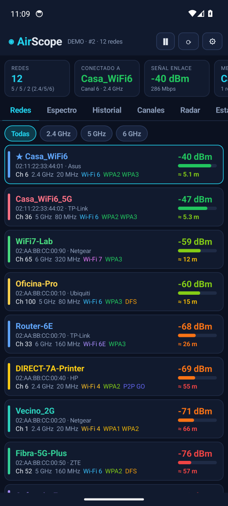
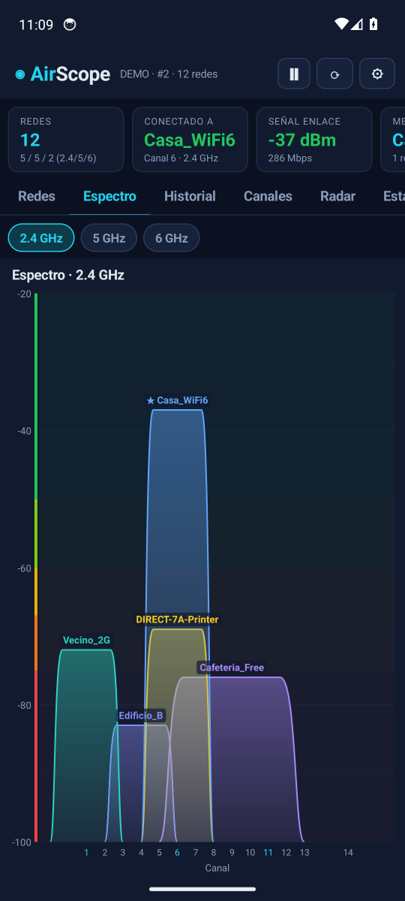
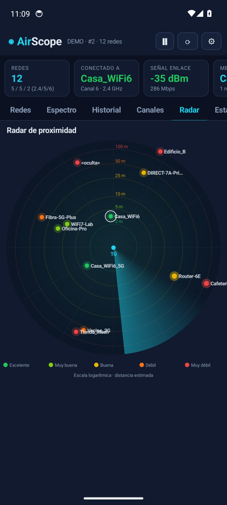
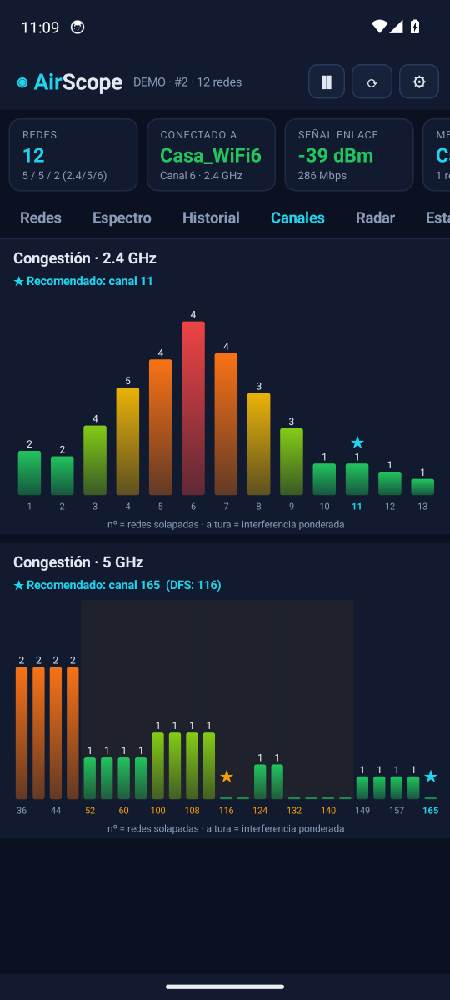
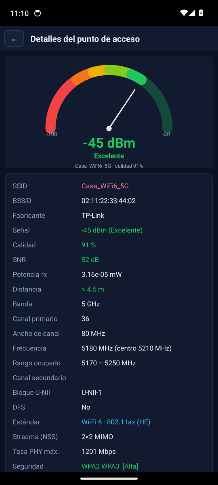
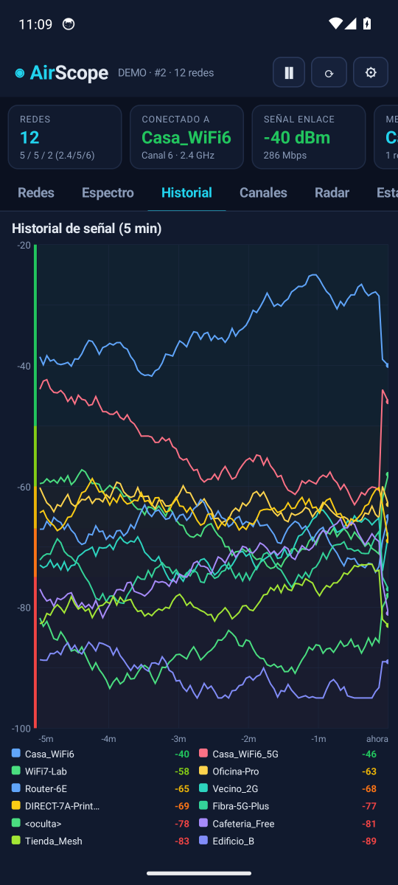
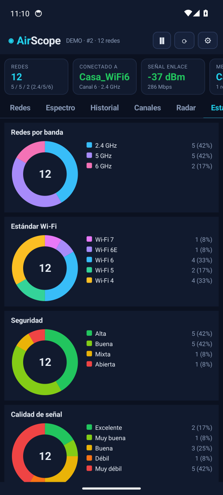
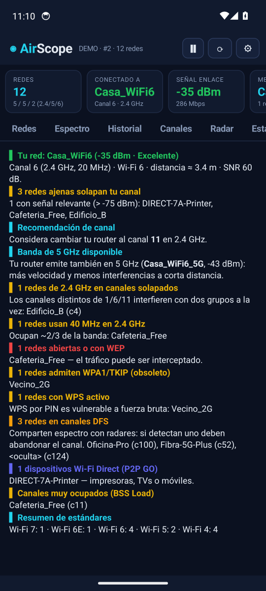
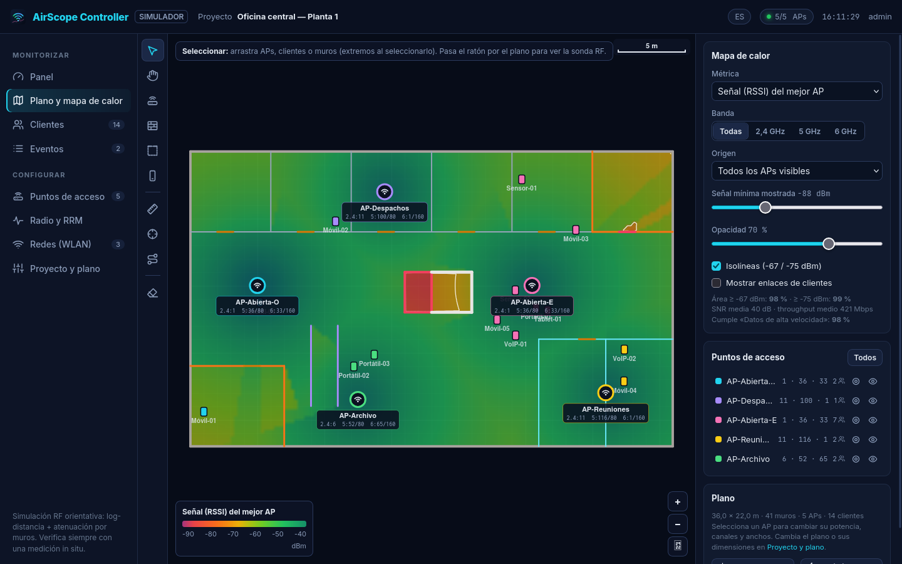
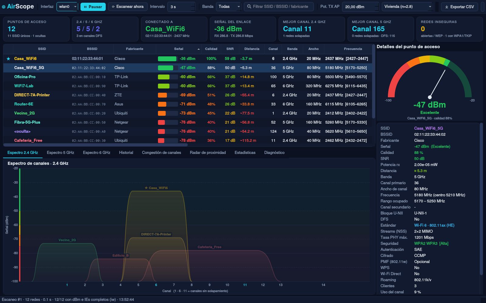

Potencia en dBm, distancia estimada, canales, DFS, Wi-Fi 4/5/6/6E/7 y bandas de 2.4, 5 y 6 GHz. Espectro de canales, radar de proximidad y diagnóstico automático. Verde = cerca, rojo = lejos.





AirScope lee los Information Elements que emite cada router y los convierte en gráficas que se entienden de un vistazo.
RSSI real, calidad %, SNR, potencia en mW y medidor tipo velocímetro con escala de color.
Modelo de pérdidas log-distancia configurable (vivienda, oficina…) y potencia TX anunciada por el AP.
Canal primario y secundario, 20/40/80/160/320 MHz, frecuencia central y rango ocupado.
Canales compartidos con radar (52-144), radar meteorológico con CAC de 10 min y bloques U-NII-1 a U-NII-4.
Detección del estándar 802.11n/ac/ax/be, streams MIMO y tasa PHY máxima teórica.
WPA1/2/3, SAE, FT, 802.1X, cifrados CCMP/TKIP/GCMP, PMF 802.11w y avisos de WPS.
Identifica impresoras, TVs y móviles que actúan como Group Owner.
Interferencias sobre tu red, canal recomendado ★, redes abiertas, canales solapados y BSS Load.
Capturas reales de la app (en modo demostración, para no mostrar redes de vecinos).



Pulsa Descargar APK desde el navegador del móvil.
Android te pedirá permitir «instalar apps desconocidas» para tu navegador. Acéptalo solo para esta instalación.
Concede el permiso de ubicación: Android lo exige a cualquier app que escanee redes WiFi.
Con la ubicación del sistema y el WiFi encendidos, las redes aparecerán al instante.
de1da6a18c9530c21611025201c0adf518249ff76b2f1a198ec56fdc8cbe433abea93302405e686034c130850c904fd979381603748fd528cac728076b02b04e
Sube el plano de tu local, indica sus medidas, dibuja los muros y coloca los puntos de acceso. Ajusta potencia en dBm, canales y anchos de 20 a 320 MHz y obtén al instante mapas de calor de señal, SNR, SINR, interferencia co-canal, velocidad y zonas de servicio, AP por AP o todos juntos.

La misma plataforma con pantalla grande: tabla completa, espectros de 2.4/5/6 GHz, historial, radar y exportación a CSV. Sin necesidad de root.
# Instalar (Arch, Debian/Ubuntu, Fedora, openSUSE) git clone https://github.com/melvinfranco99/airscope.git cd airscope && ./install.sh # Ejecutar airscope

Android considera que la lista de redes WiFi cercanas puede revelar tu ubicación, por eso obliga a cualquier app que escanee WiFi a pedir ese permiso. AirScope no tiene permiso de Internet: nada sale de tu teléfono.
Desde Android 9 el sistema limita los escaneos a 4 cada 2 minutos por app. Puedes desactivar «Limitación de búsqueda de Wi-Fi» en las Opciones de desarrollador para escanear cada pocos segundos.
Es una estimación con un modelo físico de pérdidas. Paredes, muebles y orientación de antenas alteran el resultado; úsala como referencia de cerca/lejos. Puedes ajustar el entorno en ⚙ Ajustes.
Que se ha estimado por el ancho de canal porque el sistema no proporcionó los Information Elements (ocurre en Android 10 o anterior).
Es normal en apps que no se descargan desde Google Play. El APK está firmado y el código fuente completo está en GitHub para que puedas revisarlo o compilarlo tú mismo.